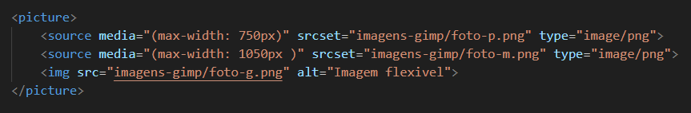

Tente abrir esse site em vários dispositivos diferentes ou simplesmente aumente e diminua o tamanho do seu navegador.
OBS: a tag <picture></picture> permite criar varias fonte, e inserindo a tag <source media="(min-width: )" srcset="">, por padão ela vem min, alterar para max, no caso de minimo para maximo e ela permite inserir os tamanhos da imagem e a flexibilizar o tamanho conforme muda o tamanho da página.
Deve se prestar a atenção ao inerir a tag <source media="(min-width: )" srcset="">, na ordem, pois as imagem menor que ocupam menos espaço/(px), devem ser as primeiras e assim sucetivamente, da menor até a maior, igual a imagem do backstage.
print do backstage:
música piano
Para adicionar o audio, é necessario utilizar a tag <audio></audio> e colocar alguns parametros dentro da tag, sendo esses parametro:
<audio src="" controls autoplay></audio>
Se quiser também da para deixar reproduzindo em loop, basta penas adicionar o parametro loop, ficando assim <audio src="" controls autoplay loop></audio>